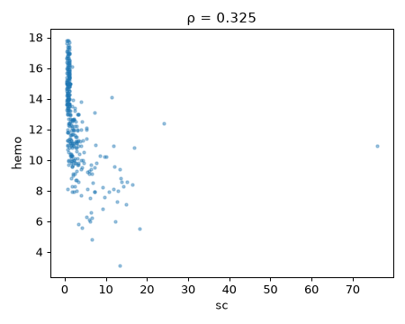
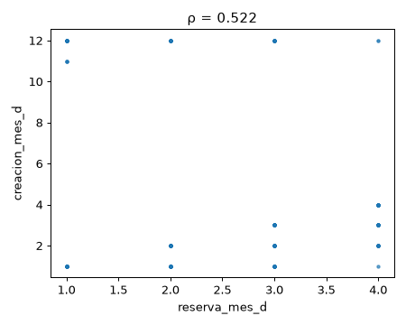

Question : Quels facteurs modifient le lien entre poids, glycémie et maladie (âge, sexe, tabac, mode de vie) ?
2026-11-02 à 21:58 · 2 datasets analysés · interprété par gemini-3.5-flash-lite
Méthode : chaque dataset est coupé en deux moitiés fixes. Les découvertes sont cherchées sur la 1re moitié puis revérifiées sur la 2e (✔ confirmé / ✘ non confirmé) ; les hypothèses sont testées uniquement sur la 2e moitié.
Proposées par le LLM lors d'un run précédent, testées ici par la Raspberry.
bmi · y = charges · groupe = smokerCe qui est testé exactement : Le lien entre bmi et charges change-t-il selon smoker ?
Dans medical_cost, la corrélation bmi~charges vaut +0.81 pour « smoker = yes » contre +0.11 pour « smoker = no » (écart 0.70, p = 3.5e-25). [Testé sur : moitié de confirmation (655 lignes jamais vues à l'exploration)]
Age · y = class · seuil = 45.0Ce qui est testé exactement : Le lien entre Age et class est-il différent de Age = 45.0 ?
Dans diabetes_risk_prediction_dataset, class vaut en moyenne 0.603 juste en dessous de Age = 45 et 0.669 juste au-dessus (écart +0.13 écart-type, p = 0.22, fenêtre ±11.1).
Total_Bilirubin · y = Alamine_Aminotransferase · groupe = GenderCe qui est testé exactement : Le lien entre Total_Bilirubin et Alamine_Aminotransferase change-t-il selon Gender ?
Dans Indian-Liver-Patient-Records, la corrélation Total_Bilirubin~Alamine_Aminotransferase vaut +0.42 pour « Gender = Male » contre +0.41 pour « Gender = Female » (écart 0.01, p = 0.94).
bgr · y = sc · groupe = dmCe qui est testé exactement : Le lien entre bgr et sc change-t-il selon dm ?
sc · y = hemo · groupe = htnCe qui est testé exactement : Le lien entre sc et hemo change-t-il selon htn ?
age · y = sc · seuil = 60Ce qui est testé exactement : Le lien entre age et sc est-il différent de age = 60 ?
reserva_mes_d ~ creacion_mes_dLa relation apparente entre le mois de réservation et le mois de création de la demande reflète simplement la structure séquentielle de la prise de rendez-vous.
spearman = 0.55, pearson = -0.028, n = 20000 · score 1.00
reserva_mes_c ~ creacion_mes_dIl s'agit d'un artefact d'encodage lié aux formats cycliques ou alternatifs des mois de réservation par rapport à la création.
spearman = -0.55, pearson = 0.009, n = 20000 · score 1.00
creacion_mes_d ~ creacion_mes_cCorrélation mécanique entre deux variables temporelles décrivant le même processus administratif d'enregistrement.
spearman = -0.525, pearson = 0.03, n = 20000 · score 1.00
sc ~ hemoForte association négative entre la créatinine sérique et l'hémoglobine, traduisant l'anémie rénale classique chez les patients insuffisants rénaux.
spearman = -0.726, pearson = -0.402, n = 337 · score 0.82
bgr ~ scLien modéré entre la glycémié à jeun et la créatinine, reflétant l'impact de la néphropathie diabétique sur la fonction rénale.
spearman = 0.359, pearson = 0.115, n = 351 · score 0.74
al ~ scL'albuminurie (al) est fortement corrélée à l'élévation de la créatinine (sc), marquant la dégradation de la barrière glomérulaire.
spearman = 0.641, pearson = 0.399, n = 337 · score 0.74
age ~ scLéger vieillissement observé chez les patients ayant des taux de créatinine plus élevés, cohérent avec la diminution physiologique de la fonction rénale avec l'âge.
spearman = 0.35, pearson = 0.133, n = 374 · score 0.72
reserva_mes_d ~ creacion_mes_cForte corrélation linéaire parfaite par morceaux due à la façon dont les variables de temps de réservation et de création ont été transformées ou encodées.
spearman = -0.883, pearson = -0.882, n = 20000, q = 0.0 · score 0.71
**Author**: L.Jerlin Rubini **Source**: [UCI](https://archive.ics.uci.edu/ml/datasets/chronic_kidney_disease) - 2015 **Please cite**: [UCI](https://archive.ics.uci.edu/ml/citation_policy.html) **Chronic_Kidney_Disease Data Set** This dataset can be used to predict the chronic kidney disease and it c

sc ~ hemo spearman = -0.726, pearson = -0.402, n = 337bgr ~ sc spearman = 0.359, pearson = 0.115, n = 351al ~ sc spearman = 0.641, pearson = 0.399, n = 337age ~ sc spearman = 0.35, pearson = 0.133, n = 374sc ~ hemo spearman = -0.726, pearson = -0.402, n = 337, q = 4.4e-55bu ~ sc spearman = 0.703, pearson = 0.586, n = 380, q = 3.6e-56al ~ hemo spearman = -0.683, pearson = -0.635, n = 313, q = 4e-43al ~ sc spearman = 0.641, pearson = 0.399, n = 337, q = 3.1e-39sg ~ hemo spearman = 0.629, pearson = 0.603, n = 313, q = 8.5e-35su ~ bgr spearman = 0.602, pearson = 0.718, n = 313, q = 2.4e-31bu ~ hemo spearman = -0.592, pearson = -0.61, n = 335, q = 4e-32sg ~ sc spearman = -0.559, pearson = -0.361, n = 336, q = 3.7e-28al ~ sod spearman = -0.534, pearson = -0.46, n = 276, q = 4.7e-21htn ~ dm cramers_v = 0.609, p = 6.5e-31sg ~ al spearman = -0.52, pearson = -0.47, n = 351, q = 7.2e-25Context The No Show problem is one of the bigest on the health industry, about 30 of the patient fail theirs appointments. Content 61K points, from 2017.01.01 to 2017.04.30 and 19 features to work with Data Dictionary especialidad : what kind of specialist is going to. Ie dematologist, etc. edad: Ag

reserva_mes_d ~ creacion_mes_d spearman = 0.55, pearson = -0.028, n = 20000reserva_mes_c ~ creacion_mes_d spearman = -0.55, pearson = 0.009, n = 20000creacion_mes_d ~ creacion_mes_c spearman = -0.525, pearson = 0.03, n = 20000reserva_mes_d ~ creacion_mes_c spearman = -0.883, pearson = -0.882, n = 20000, q = 0.0reserva_mes_c ~ creacion_mes_c spearman = 0.883, pearson = 0.887, n = 20000, q = 0.0reserva_hora_d ~ reserva_hora_c spearman = 0.701, pearson = 0.749, n = 20000, q = 0.0reserva_mes_d ~ creacion_mes_d spearman = 0.55, pearson = -0.028, n = 20000, q = 0.0reserva_mes_c ~ creacion_mes_d spearman = -0.55, pearson = 0.009, n = 20000, q = 0.0creacion_mes_d ~ creacion_mes_c spearman = -0.525, pearson = 0.03, n = 20000, q = 0.0creacion_hora_d ~ creacion_hora_c spearman = 0.497, pearson = 0.496, n = 20000, q = 0.0reserva_dia_d ~ reserva_dia_c spearman = -0.432, pearson = -0.4, n = 20000, q = 0.0* -> show balanced_accuracy = 0.528, baseline = 0.5, avec_seulement_especialidad = 0.535